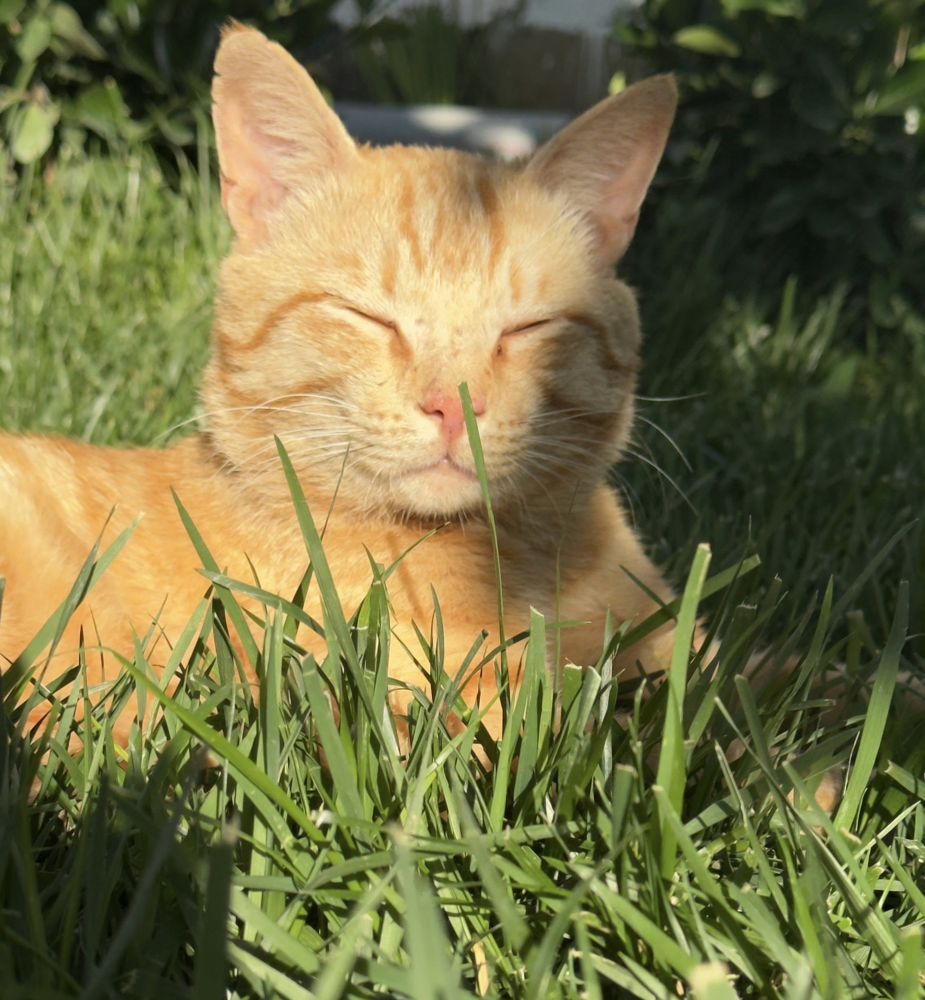

Rıjik 🧡Baku Ginger
A sunny ginger cat enjoying the Baku afternoon.
THE CAT COMMUNITY OF OUR CITY
From the stone streets of İçərişəhər to quiet neighbourhood courtyards, cats are part of everyday Baku life.
Cats resting between sandstone walls, balconies and ancient courtyards.
Cats enjoying the breeze and green spaces around Baku Boulevard.
Residents leaving food and water for familiar courtyard cats.
Discover cats around Baku. Filter the gallery by colour.

Rıjik 🧡A sunny ginger cat enjoying the Baku afternoon.
 Qara 🖤
Qara 🖤
Quiet and elegant. Watching the old city streets.
 Zolaqlı 🐯
Zolaqlı 🐯
Curious and friendly. Usually waiting near the courtyard.
 Ağ 🤍
Ağ 🤍
Calm and always looking for a sunny place.
 Bala 🐾
Bala 🐾
Tiny, playful and discovering everything.
Mark places around Baku where cats were fed, given water, live together or need help.
Places where city life and Baku cats meet.
Stone streets, balconies and local cats around the Old City.
Cats enjoying the Caspian breeze and green spaces.
Familiar community cats living in neighbourhood yards.
Found a Baku cat? Add its photo, name, category and neighbourhood.
CatsBaku is a community for people who care about Baku's cats.
We want to connect residents, volunteers, adopters, veterinarians and people who simply leave food or water for a street cat.